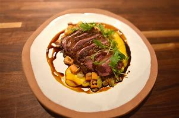

Stir Fry
Prep time: 30 mins
Yield: 4 ½ dozen
INGREDIENTS: Stir Fry(pound)
AVG CALS :311
Chicken Breast (boneless skinless, or chicken thighs): ½
Zucchini (sliced or cubed)
3 tablespoons Oil (divided)
2 tablespoons Unsalted Butter
% Daily Value*
Choose Your Flavourite

There is much to love about this Chinese vegetable stir-fry: meaty shiitake mushrooms, crunchy broccoli, sweet bell peppers and a gingery, garlicky brown sauce.